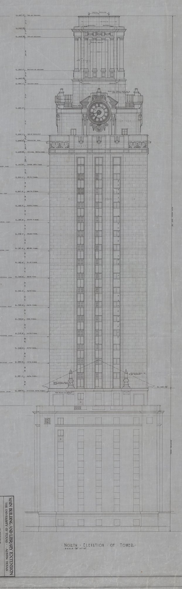
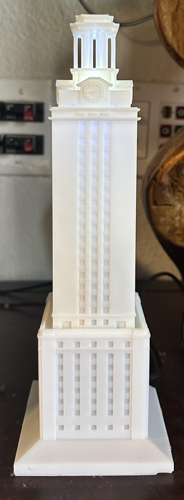
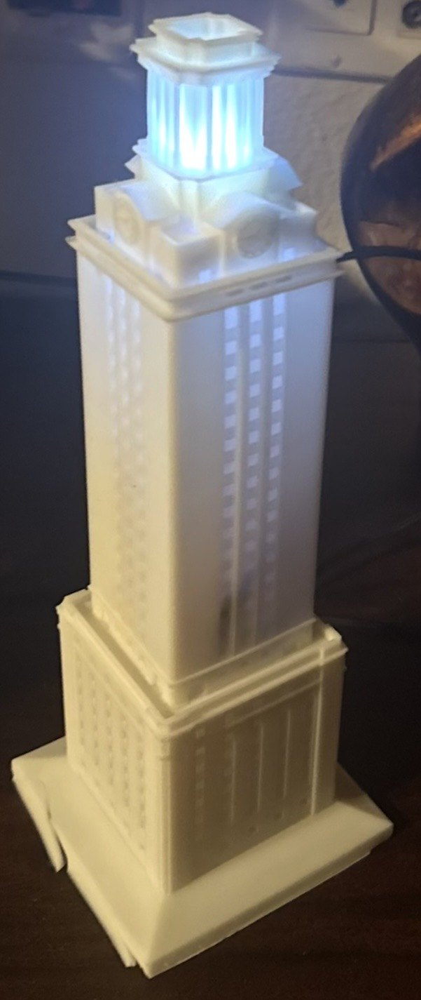
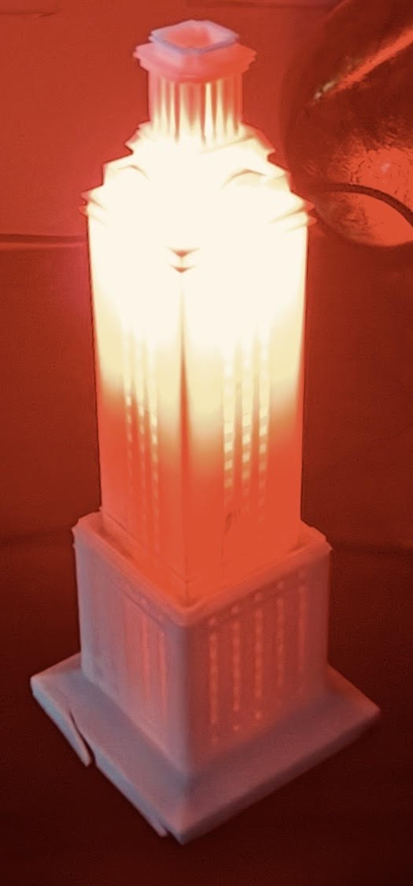

Der UT Tower auf dem Schreibtisch, beleuchtet wie das Original
Ein Modell des Turms der UT Austin im Schreibtischmaßstab, in SolidWorks nach den originalen Architektur-Blaupausen modelliert und in weißem Resin gedruckt, mit einem ESP32 im Inneren, der die Turmbeleuchtungs-Seite der Universität liest und das Modell passend beleuchtet: weiß an einem gewöhnlichen Abend, Burnt Orange nach einem Sieg.




Die Quelle
Die meisten Turmmodelle im Netz sind nach Fotos geschätzt. Ich habe stattdessen mit den originalen Zeichnungen "Main Building and Library Extension" gearbeitet, der Nordansicht des Turms im Maßstab 1/8 in pro Fuß, mit jeder Stufenhöhe am linken Rand vermerkt. Die Rücksprünge, die Kolonnade der Aussichtsplattform, das Zifferblatt und der Fensterrhythmus im Modell stammen alle aus diesem Blatt.
Die Beleuchtung
Der echte Turm ändert seine Beleuchtung bei Football-Siegen, zur Graduierung und zu anderen Anlässen, und die Universität veröffentlicht den aktuellen Status auf einer Webseite. Ein ESP32 im Sockel fragt diese Seite über WLAN ab, parst die Konfiguration und steuert die LEDs des Modells passend an; er hat keinen eigenen Zeitplan, er zeigt, was die Universität veröffentlicht. Die Wände sind dünn genug gedruckt, dass die Fensterausschnitte bei Beleuchtung von innen leuchten, was die Beleuchtungszustände ablesbar macht statt nur einen hellen Sockel zu zeigen.
Technische Details
| Quelle | Originale Architektur-Blaupausen des UT Tower |
|---|---|
| CAD | SolidWorks; Modellhüllmaß 70 x 70 x 203 mm; STL für den Druck exportiert (34k Dreiecke) |
| Druck | Weißes Resin; Sockel und Turm separat gedruckt |
| Controller | ESP32, WLAN, periodischer HTTP-Abruf und Parsing der Beleuchtungs-Statusseite |
| Beleuchtung | Eine Handvoll LEDs in Schaft und Sockel, den veröffentlichten Konfigurationen des Turms zugeordnet |
| Dateien | ut-tower.stl |